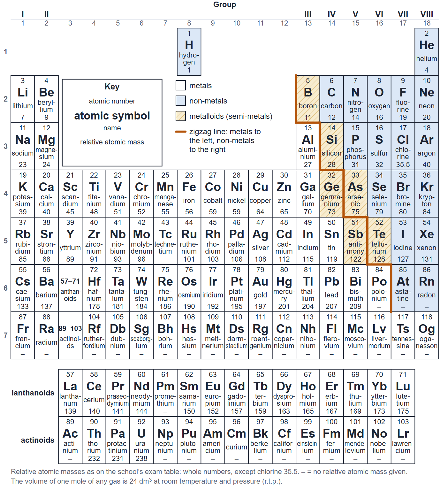
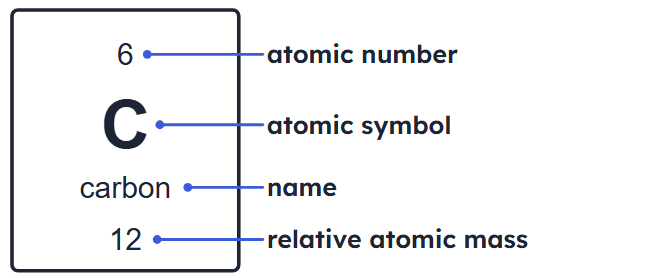
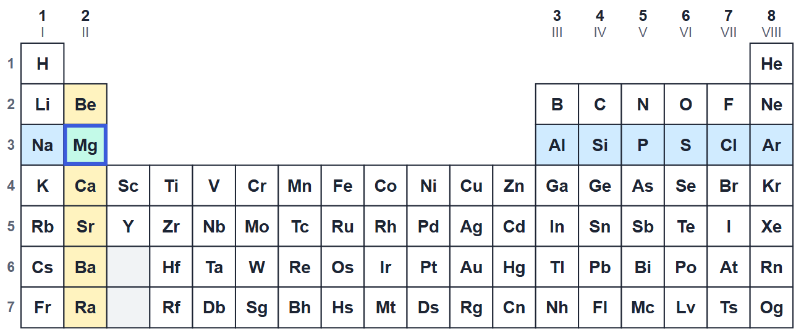

Paper check 4 · Part 1
MODULE 4 · THE PERIODIC TABLE · PART 1
📝 Paper check
Pen, coursebook, answer book. That's it.
1☑️ Tick what is done and marked | 2✏️ Finish and mark the rest | 3📷 Photo of a marked page? Optional |
✅ Mark it with the answer book. coursebook pages · not in this preview
📘 COURSEBOOK Pages 82–83 Section 4.1  | Lesson 1 · Mendeleev and the order of the elements
|
📘 COURSEBOOK Pages 85–86 Section 4.2  | Lesson 2 · Reading the Periodic Table
|
📘 COURSEBOOK Pages 87–88 Section 4.3  | Lesson 3 · Groups and periods
|
| 💡 Wrong answer? Cover it and try again from memory. Then check the page and fix it in a different colour. Put it on your Try again on list. |
Part 2
📷 In the real course, learners can add a photo of a marked page here. This preview collects nothing.